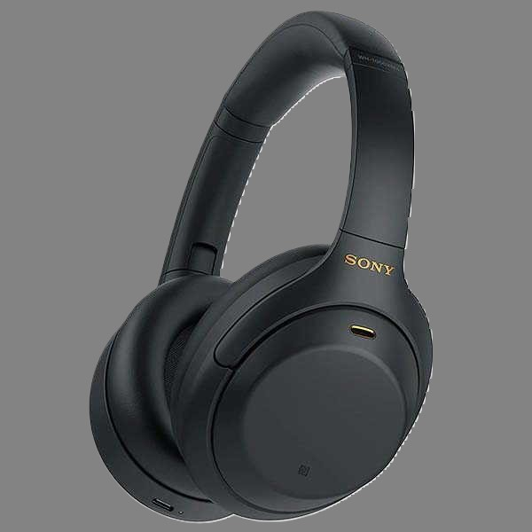

écouteur sans fil Sony

Réduisez le bruit autour de vous avec une performance
longue durée de suppression du bruit.Dotés de la technologie
Dual Noise Sensor et d’un processeur V1 intégré, les WH-CH720N vous permettent
de vous plonger entièrement dans votre musique sans distractions. Conçus de façon ergonomique pour
être légers, confortables et avec une autonomie de 35 heures, vous oublierez presque que vous les
portez.